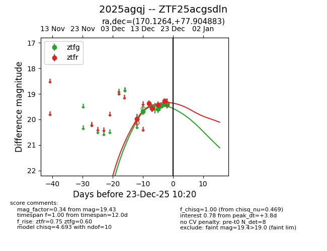
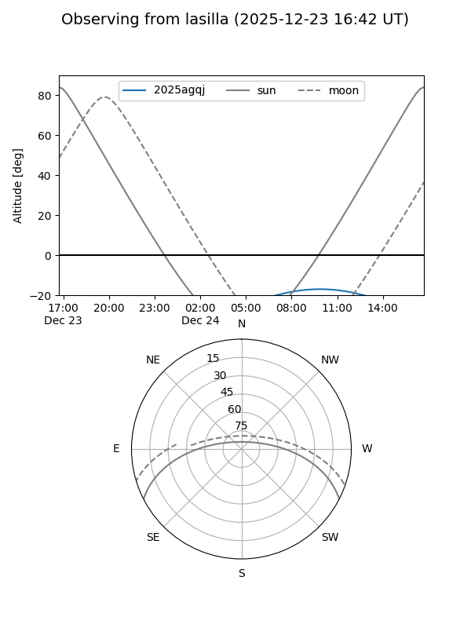
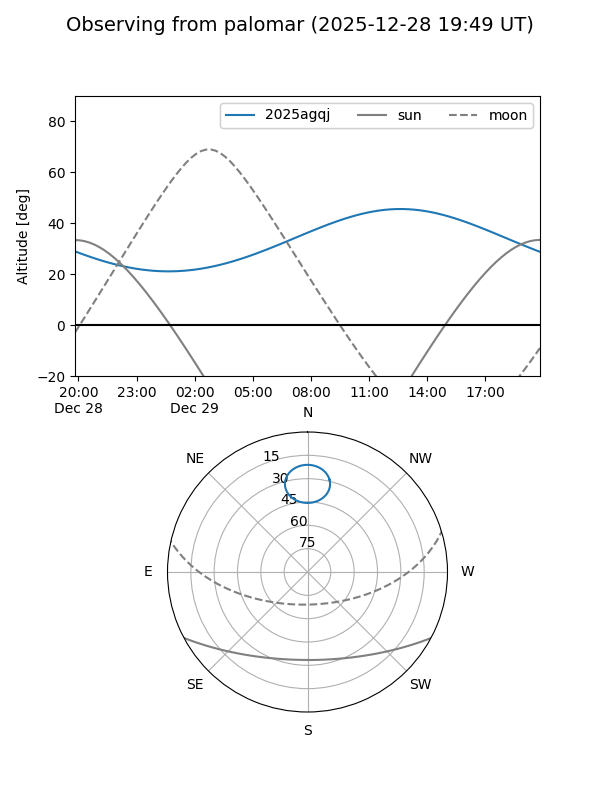

2025agqj
Target 2025agqj at 2025-12-31 16:59
Aliases and brokers:
FINK:
Lasair:
ALeRCE:
TNS:
YSE:
alt names
ZTF25acgsdln (ztf,fink_ztf)
2025agqj (tns,yse)
Coordinates:
equatorial (ra, dec) = 170.1264,+77.90488
equatorial (HMS+DMS) = 11:20:30.33,+77:54:17.58
galactic (l, b) = (128.8428,+38.15991)
Flags:
Photometry:
last ztfg=19.59, ztfr=19.21
7 ztfg, 6 ztfr detections
Lightcurve

Visibility


Additional plots